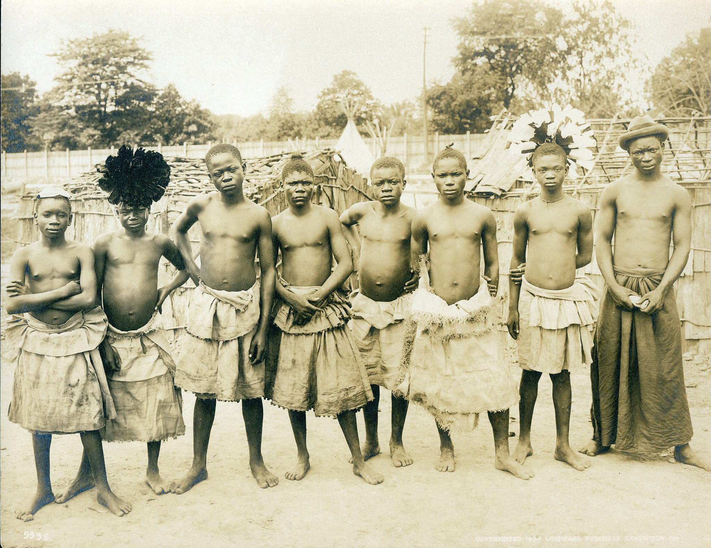
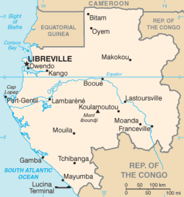
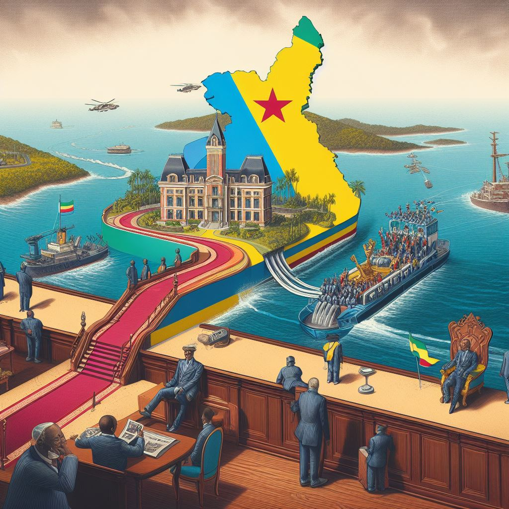
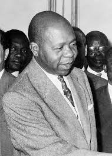

|  | Estima-se que a área onde hoje se encontra o território gabonês já era ocupada há centenas de milhares de anos. Entretanto, os grupos de pigmeus foram os primeiros a se estabelecerem de fato na região, seguido pelos povos do grupo bantu. Os primeiros exploradores vindos de outros continentes começaram a chegar ao Gabão por volta do século XV, quando os portugueses passaram pela costa gabonesa, ficando próximos de onde está a capital, Libreville. Cabe lembrar que nesse período uma série de reinos, formados pelos grupos étnicos locais, haviam sido formados no Gabão. |
Mapa de Gabão:
|  |
Na sequência dos portugueses, vieram os holandeses e, então, os franceses. Os franceses chegaram ao Gabão durante o século XVII, mais precisamente no ano de 1630. Entretanto, foi somente no século XIX que os franceses conseguiram tornar o Gabão, de fato, uma colônia da França , inicialmente conquistando terras litorâneas e depois expandindo os seus domínios para o interior do país. Quando a colonização francesa, houve a intensificação da retirada de recursos naturais do Gabão em direção à Europa. No entanto, o sentimento anticolonial começou a crescer no país, intensificando-se após o final da Segunda Guerra Mundial. O Gabão se tornou um país soberano e independente em 17 de agosto de 1960, adotando um regime de governo parlamentarista que, um ano mais tarde, foi alterado para o presidencialismo. |
Em 3 de setembro de 1843, a bandeira francesa é hasteada sobre o Fort d'Aumale. Ao final do século, o Gabão e o Congo são reunidos sob a denominação de Possessão do Congo francês e dependências . O primeiro comissário geral desta união foi o famoso Savorgnan De Brazza, que residiu em Libreville, fundada por Bouët – Willaumez em 1842. Em 1904 , o Gabão é separado do Congo e é administrado por uma série de governadores, até 1959. A partir desta data, um alto-comissário da França administra o país, até 1965.
Na escolha dos membros do conselho do governo, Léon MBA foi eleito vice-presidente.
Léon MBA
Em 1958, o Gabão aprova a constituição proposta pelo General De Gaulle, e a comunidade gabonesa é criada. A República do Gabão nasce legislativa. Em 17 de agosto de 1960, a independência é proclamada por Jean Risterucci, alto comissário da França para o Gabão e, a partir de então, embaixador da França no Gabão.